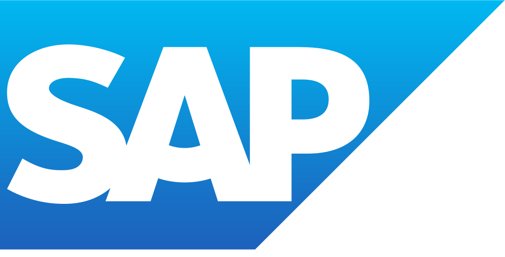
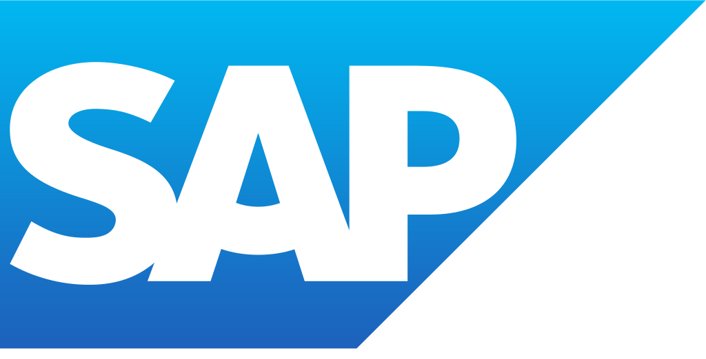

Az SAP a világ vezető integrált vállalatirányítási rendszere (ERP).
Integrált vállalatirányítási rendszer alatt egy adott vállalat minden vállalati folyamatát lefedő programcsomagot értünk. Az SAP ágazatspecifikus megoldásait több mint 120 országban, hozzávetőleg 32 000 vállalat használja, kis- és középvállakozások, nagyvállalatok egyaránt.
Az SAP AG 1972-ben alakult Weinheimben, eredeti neve „Systemanalyse und Programmentwicklung”, aminek jelentése „rendszerelemzés és programfejlesztés”.
A rövidítését később átértelmezték, az új „Systeme, Anwendungen und Produkte in der Datenverarbeitung” név jelentése: Rendszerek, alkalmazások és termékek az adatfeldolgozásban.
Az SAP AG jelenleg a világ negyedik legnagyobb szoftvercége, amelynek leányvállalata az SAP Hungary Kft több mint 1000 főt foglalkoztat. Szerte a világban 1500 partnercég értékesít SAP-licenceket, végzi a rendszerek bevezetését és látja el azok támogatását.
Összességében 12 millió felhasználó alkalmaz SAP-rendszert, amely az ügyviteli megoldások területén kimagasló szám.
A SAP Business One a néhány százmillió forint éves árbevételű cégek számára létrehozott, úgynevezett dobozos megoldás, míg a SAP R/3 az ennél nagyobb cégek számára ajánlott üzleti szoftver.
Legújabb innovatív terméke a cég saját in-memory adatbáziskezelőjét használó S/4 HANA.
Az SAP saját programozási nyelve az ABAP.